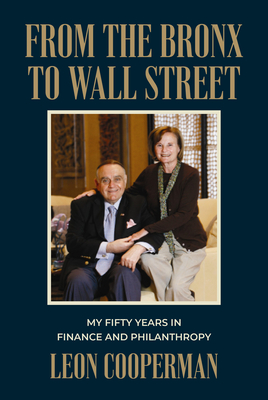

1943年4月25日，利昂·库珀曼（Leon Cooperman）出生在纽约南布朗克斯，父母是波兰犹太移民，父亲以做水管工维生，他是家族里第一个读完大学的人。库珀曼本科就读于亨特学院（Hunter College），随后进入哥伦比亚商学院，1967年拿到MBA学位后即加入高盛（Goldman Sachs）。此后二十二年，他都在高盛的投资研究部工作，做到部门负责人，并连续九年在《机构投资者》（Institutional Investor）“全美研究团队”评选中被投票为头号策略分析师。1989年，他升任高盛资产管理公司（Goldman Sachs Asset Management）董事长兼CEO；1991年底，在高盛工作满二十五年后，他以合伙人身份退休，随即创立对冲基金Omega Advisors。
《从布朗克斯到华尔街：我的金融与慈善五十年》由Advantage Books于2023年7月18日出版，精装212页。书中，库珀曼把自己的选股方法追溯到本杰明·格雷厄姆（Benjamin Graham）与戴维·多德（David Dodd）的价值投资传统——买入被低估的资产、耐心持有、依靠深入的基本面研究而非市场情绪。他也在书中谈及2016年9月证券交易委员会（SEC）就他2010年交易Atlas Pipeline Partners股票一事提出的内幕交易指控，此案于2017年5月以支付490万美元和解、不承认过错告终；库珀曼在书中为自己辩护，称调查过程“完全是滥用职权”（totally abusive）。2018年7月，75岁的他宣布将Omega Advisors转为家族理财室、退还外部投资者资金——彼时基金管理规模约36亿美元，自成立以来年化回报率达12.4%，高于标普500指数含股息再投资的9.5%。他说自己不想把余生耗在追逐标普500指数上。
慈善是全书后半部分的主线。库珀曼夫妇于2010年签署了“捐赠誓言”（Giving Pledge），承诺捐出大部分财富；此后他向哥伦比亚商学院捐赠2500万美元（2011年）、向圣巴纳巴斯医疗中心（Saint Barnabas Medical Center）捐赠2500万美元（2014年）及一亿美元（2021年）、向以色列生日权利基金会（Birthright Israel）捐赠500万美元（2010年）设立库珀曼家族基金。他把慈善与投资都解释为资本配置：先判断哪些机构具备持续执行能力，再用长期承诺而非一次性支票支持它们。《慈善新闻文摘》（Philanthropy News Digest）撰稿人丹尼尔·X·马茨指出，库珀曼的慈善观带着一种老派的责任感，近似“贵族义务”（noblesse oblige），并引用书中原话：“我希望留下的遗产，是让年轻人获得成功、成为好公民，是让医院、学校和慈善机构继续增进人类的幸福与进步。”（“I hope to leave a legacy in the way of young people finding success and becoming good citizens, and in the way of hospitals and schools and charitable nonprofits continuing to further the happiness and progress of mankind.”）
库珀曼在书中也花了不少篇幅为资本主义与自由市场辩护，反对他认为会限制市场活力的累进税制与监管政策，这一立场贯穿他从高盛研究员到对冲基金创始人的整个职业生涯。迈克尔·布隆伯格和Home Depot联合创始人肯·兰格尼都为本书写下推荐语，强调他从研究员、基金经理到慈善家的完整轨迹。回忆录同时保留了SEC诉讼这种不利章节，让读者可以把作者的辩护与公开和解记录对照阅读，而不必只接受成功者的单一版本，这也是客观评价这本自传时不可省略的重要背景。目前没有正式的中文译本。对于研究价值投资方法论、或关心一份职业生涯如何收尾的读者，这本书提供的不是选股公式，而是一份跨越五十余年的职业档案：一名水管工之子如何靠基本面研究在华尔街站稳脚跟，又如何在75岁那年主动结束一家管理数十亿美元的对冲基金，把重心转向他已经签署了十三年的捐赠誓言。书中的争议也因此更有参考价值。